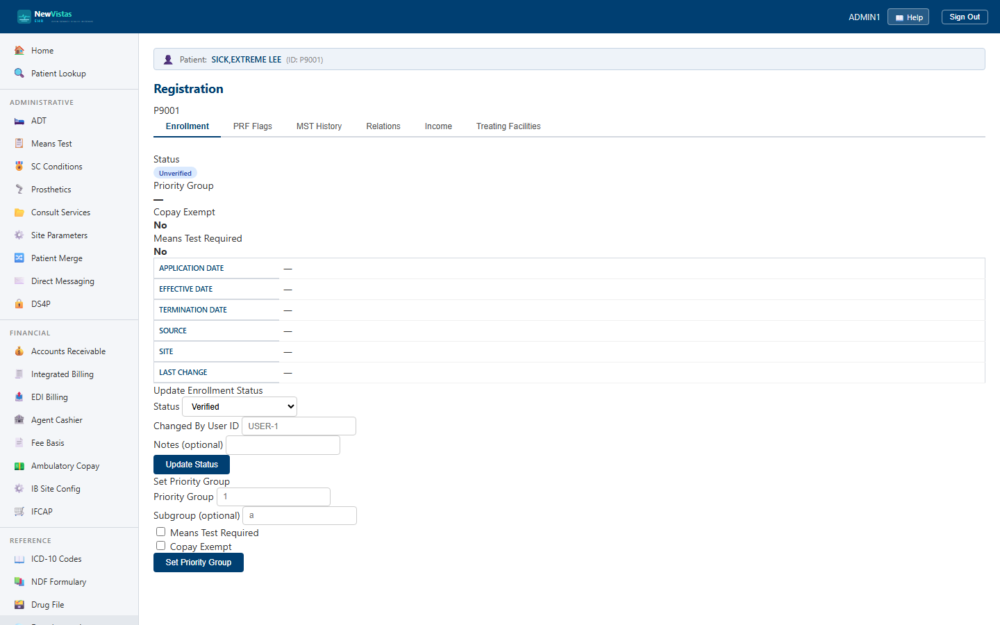

Manual › Administrator › Registration
Registration — Enrollment & Eligibility
Registration is the single place to maintain a patient's enrollment and eligibility record — their enrollment status and priority group, patient record flags, MST screening history, family and emergency relations, household income, and the facilities that treat them. It's the equivalent of VistA's PIMS Registration / Enrollment screens.
Open Registration and load a patient
- In the sidebar, under Administrative, click Registration (or go to
/registration). - The page works on the patient supplied in the URL — append
?patientId=P9001to the address. - If no patient ID is present, the page shows a warning telling you to add one; once set, the enrollment record loads automatically.

The six tabs
Across the top, six tabs switch between the parts of the registration record:
- Enrollment — status, priority group, dates, copay exemption, and means-test flags, with forms to update status and set the priority group.
- PRF Flags — active Patient Record Flags; assign a national flag (with narrative) or deactivate one.
- MST History — current Military Sexual Trauma status and screening history; record a new screening.
- Relations — family, next-of-kin, and emergency contacts; add, update, or remove a relation.
- Income — household members, total household income, and the means-test decision.
- Treating Facilities — VAMC/CBOC/community-care facilities, with a starred primary facility.
Update enrollment status and priority group
- On the Enrollment tab, use Update Enrollment Status — pick a status (e.g. Verified), enter the changing user ID, add optional notes, then click Update Status.
- Use Set Priority Group to enter the group (e.g.
1) and optional subgroup, tick Means Test Required and/or Copay Exempt, then click Set Priority Group.
Color = status
The status badge follows the system scheme: green for
Verified, amber for any Pending… state,
and red for Rejected, Cancelled, or
NotEligible… statuses.
Tip
Each form refreshes its tab on save and shows a green confirmation, so you
can record an MST screening, add a household member, or set a primary
treating facility and immediately see the updated record without
reloading the page.